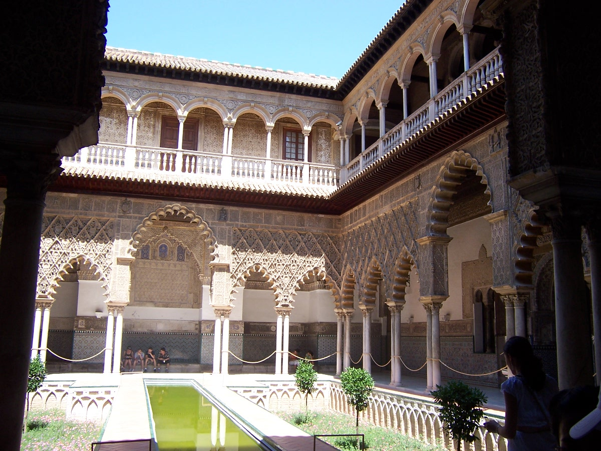
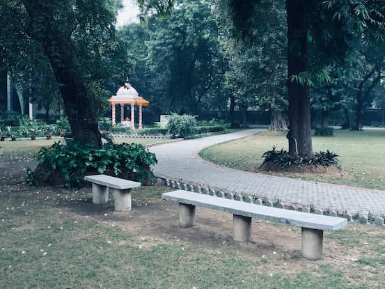

Sevilla, capital de Andalucía, combina historia, arte, flamenco y
gastronomía. Sus calles, plazas y monumentos transmiten siglos de
cultura y tradición. ¡Una ciudad que te enamorará!
10 sitios imprescindibles que ver en Sevilla
Catedral de Sevilla
¿Qué es?
El mayor templo gótico del mundo.
¿Por qué ir?
“Hagamos un templo tan grandioso que los que lo vieren labrado nos tengan por locos”. Según las crónicas
de la época estas fueron las palabras que el Cabildo Catedralicio pronunció antes de ponerse manos a la
obra y levantar una de las catedrales más inmensas y bellas del mundo. Y es que la Catedral de Sevilla
deja perplejo por sus proporciones: todo es grande en ella. Tanto, que hizo falta todo un siglo para
finalizar su construcción (1403-1507), realizada sobre una antigua mezquita. No hay que perderse el
retablo mayor, considerado por muchos una de las obras más destacadas de la historia del arte. Tampoco
está de más presentar los respetos ante los restos del mismísimo Cristóbal Colón, cuyo mausoleo se
encuentra en el interior de la catedral.

Real Alcázar
¿Qué es?
Palacio real en uso más antiguo de Europa, mezcla de estilos islámico,
gótico, renacentista y barroco, con jardines espectaculares.
¿Por qué ir?
Son muchas las civilizaciones las que han hecho del Real Alcázar, a lo largo de la historia, uno de los
conjuntos monumentales más maravillosos del mundo. Por ello en él se pueden contemplar una interesante
mezcla de estilos que van del islámico al mudéjar, pasando por el gótico, el renacentista o el barroco.
Tras sus murallas se esconden todo un universo de jardines, palacios y fortalezas repletas de leyendas: el
Jardín de los Poetas, el Patio de las Doncellas, el Salón de Embajadores… ¡Tan especial son sus estancias
que hasta la serie Juego de Tronos o la película Alatriste ficharon el lugar como escenario para sus
producciones! Los conciertos que se llevan a cabo todas las noches de verano en sus jardines son un
auténtico 'must'.
Plaza de España
Impresionante plaza semicircular con azulejos y canales, perfecta
para pasear.
Metropol Parasol
Conocido como “Las Setas”, ofrece una vista panorámica única del
centro histórico.
Torre del Oro
Torre defensiva del siglo XIII, situada junto al Guadalquivir.
Barrio de Triana
Uno de los barrios con más encanto, cuna del flamenco y la cerámica
sevillana.

Parque de María Luisa
Pulmón verde de Sevilla, ideal para pasear entre fuentes y jardines.
Basílica de la Macarena
Templo emblemático dedicado a la Virgen de la Esperanza Macarena.
Archivo de Indias
Contiene valiosos documentos sobre la exploración y colonización de
América.
Plaza de Toros de la Maestranza
Una de las plazas de toros más antiguas y monumentales de España.